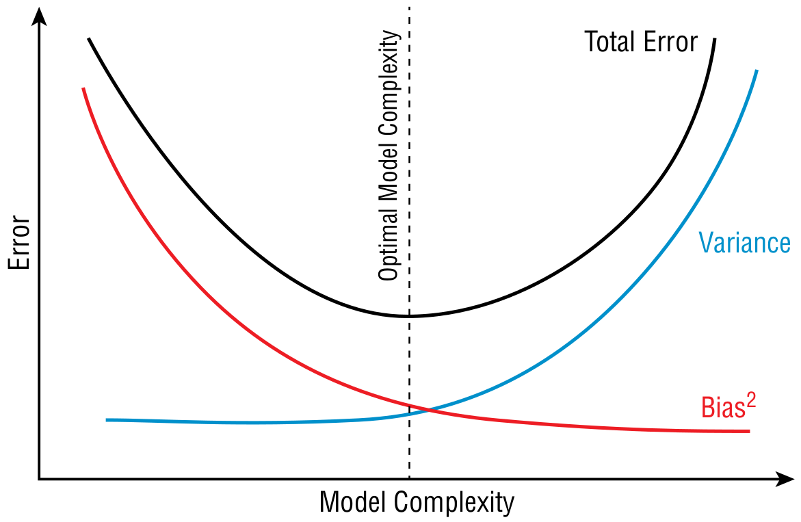

Apresentação da disciplina
ESTAT0016 – Tópicos Especiais em Estatística (Introdução à Apredizagem de Máquina)
Informações
- Grupo no WhatsApp:

- Material das aulas: http://tiny.cc/TopEspESTAT
- Contato por e-mail: sadraquelucena@academico.ufs.br
Ementa
- Pré-processamento de dados.
- Aprendizado supervisionado.
- Regressão.
- Classificação.
- \(k\)-Nearest Neighbors.
- Naïve Bayes.
- Árvores de Decisão.
- Florestas aleatórias.
- Avaliação de desempenho.
- Validação Cruzada.
- Métricas de desempenho de Classificação.
- Ajuste de parâmetros.
- Bagging, Boosting e Stacking.
- Aprendizado não supervisionado.
- Regras de Associação.
- \(k\)-means.
Datas Importantes
Avaliações
Não haverá aula
- 27 e 30/11/2023: IX SEMAC
- 25 e 28/12/2023: Recesso natalino
- 01/01/2024: Confraternização Universal (feriado nacional)
- 04, 08 e 11/01/2024: Férias coletivas para docentes
- 12/02/2024: Carnaval
- 15/02/2024: Não haverá aula
- 28/03/2024: Quinta-feira Santa (ponto facultativo)
Ferramentas


Biliografia Recomendada
- FACELI, Katti. Inteligência artificial: uma abordagem de aprendizado de máquina. Rio de Janeiro: LTC, 2011. 378 p.
- IZBICKI, Rafael; DOS SANTOS, Tiago Mendonça. Aprendizado de máquina: uma abordagem estatística [livro eletrônico]. São Carlos: Rafael Izbicki, 2020.
- NWANGANGA, Fred; CHAPPLE, Mike. Practical machine learning in R. Indianapolis: John Wiley & Sons, 2020.
- ABU-MOSTAFA, Yaser S.; MAGDON-ISMAIL, Malik; LIN, Hsuan-Tien. Learning from data. New York: AMLBook, 2012.
- HASTIE, Trevor et al. The elements of statistical learning: data mining, inference, and prediction. New York: springer, 2009.
- LANTZ, Brett. Machine learning with R: expert techniques for predictive modeling. Packt publishing ltd, 2019.
O que é apredizagem de máquina?
Descobrindo conhecimento a partir dos dados
- O objetivo da aprendizagem de máquina (o inglês, machine learning) é utilizar algoritmos para descobrir conhecimento a partir de conjuntos de dados para ajudar a tomada de decisões.
Casos em que a aprendizagem de máquina geralmente agrega valor:
Descobrir anomalias em registros de sistema e aplicativos que podem indicar um incidente de cibersegurança;
Prever as vendas de produtos com base nas condições de mercado e ambientais;
Recomendar o próximo filme que um cliente pode querer assistir com base em sua atividade passada e nas preferências de clientes semelhantes;
Definir os preços dos quartos de hotel com bastante antecedência com base na demanda prevista.
Algoritmos
Na ciência de dados as técnicas de aprendizagem de máquina são chamadas de algoritmos.
- Um algoritmo é um conjunto de etapas que são seguidas para realizar um processo.
Outros termos também usados:
- métodos
- modelos
- técnicas
Inteligência artificial, Aprendizagem de máquina e Aprendizagem profunda
Inteligência artificial (IA): (artificial intelligence – AI) qualquer técnica que faz sistemas computacionais se comportarem artificialmente como se fossem inteligentes.
Aprendizagem de máquina: (machine learning) subconjunto de técnicas de inteligẽncia artificial que tentam aplicar estatísticas a problemas de dados na tentativa de descobrir conhecimento a partir de dados.
Aprendizagem profunda: (deep learning) subdivisão avançada da aprendizagem de máquina que utiliza redes neurais para análise de imagens, vídeo e áudio.
Termos usado na área
- Instância: representa uma unidade amostral ou indivíduo. Uma instância é caracterizada por um conjunto de atributos ou características que a descrevem. Um conjunto de dados é composto por várias instâncias.
- Sinônimos: registro, exemplo, observação.
- Atributo: propriedade ou característica de uma instância. Cada instância é composta por vários atributos, que podem ser discretos ou contínuos.
- Sinônimos: variável, característica.
Tipos de aprendizagem de máquina
Aprendizagem supervisionada: o algoritmo é alimentado com dados de entrada acompanhados de respostas desejadas (rótulos). O objetivo é aprender uma função que relacione esses dados de entrada às saídas desejadas usando o conjunto de treinamento como exemplos.
Aprendizagem não supervisionada: o algoritmo é alimentado com um conjunto de dados de entrada que não possui rótulos ou respostas desejadas associadas. O objetivo do aprendizado não supervisionado é o algoritmo descobrir padrões, estruturas ou grupos nos dados por conta própria.
Aprendizagem por reforço: envolve um agente que interage com um ambiente e toma ações para maximizar uma recompensa ao longo do tempo. O agente aprende por tentativa e erro, ajustando suas ações com base nas recompensas recebidas.
Aprendizagem supervisionada
Um algoritmo de aprendizagem supervisionada recebe um conjunto de treinamento como entrada em que já se sabe as respostas e usa esses dados para desenvolver um modelo que busca prever ou classificar novos dados sem respostas.
Exemplos:
Detecção de fraudes em transações financeiras.
Classificação de e-mails em “spam” ou “não spam”.
Diagnóstico médico por imagem.
Aprendizagem não supervisionada
Algoritmos de aprendizagem não supervisionada analisam dados que não possuem respostas conhecidas e procuram identificar padrões ou estruturas escondidas nos dados por conta própria.
Exemplos:
Recomendação de produtos em comércio eletrônico a partir do agrupamento de clientes com perfis semelhantes.
Análise de dados de sensores ambientais para identificar padrões de poluição, variações climáticas e outros eventos de interesse.
Aprendizagem por reforço
O algoritmo tem a capacidade de interagir com o ambiente, experimentando diversas ações e decisões para determinar aquelas que proporcionam os melhores resultados.
Por meio de tentativa e erro, o algoritmo adquire a habilidade de identificar as abordagens mais eficazes para realizar uma tarefa.
Exemplos:
Treinar robôs aspiradores para mapear e limpar residências
Fornecer conteúdo personalizado em plataformas de mídias sociais com base nas preferências e interações do usuário.
Treinar agentes virtuais para jogar xadrez.
Nesta disciplina vamos nos ater a aprendizagem supervisionada e não supervisioanada.
Tipos de abordagem
Classificação: modelos usados para prever categorias. Exemplos:
Identificar se um e-mail é “spam” ou “não spam”.
Classificar pacientes pelo risco de saúde como “baixo risco”, “médio risco” e “alto risco”.
Regressão: modelos usados para prever valores numéricos. Exemplos:
Previsão de preços de imóveis.
Previsão de venda de produtos.
Aprendizado por similaridade: modelos que buscam agrupar instâncias em um conjunto de dados.
Agrupamento de clientes em com base em comportamentos de compra semelhantes, permitindo campanhas de marketing direcionadas.
Recomendação de filmes ou música com base nas preferências de outros usuários com gostos semelhantes.
Avaliação dos modelos
A natureza dos dados e a natureza do algoritmo define a técnica aproriada aos dados.
Na aprendizagem supervisionada a eficácia de um algoritmo é avaliada com base no número e/ou magnitude dos erros que ele comete.
Para problemas de classificação, frequentemente observamos a taxa de classificação coreta ou incorreta.
Para problemas de regressão observamos a diferença entre os valores previstos pelo algoritmo e os valores reais.
Erros de classificação
Suponha que uma observação é classificada como positiva se pertence a uma classe ou classificada como negativa se pertence a outra classe.
Há dois tipos de erros que podem ocorrer em problemas de classificação:
- Falsos positivos: quando o modelo classifica uma observação como positiva quando, na realidade, é negativa (erro tipo I).
- Falsos negativos: quando o modelo classifica uma observação como negativa quando, na realidade, é positiva (erro tipo II).
Também podemos classificar uma observação como verdadeiro positivo ou verdadeiro negativo dependendo da classificação que o modelo fez.
Tipos de erro em classificação
Tipos de erro em classificação
Algumas das métricas que costumamos usar para avaliação de modelos de classificação são
Taxa de falsos positivos (TFP): percentagem de instâncias classificadas incorretamente como positivas.
Taxa de falsos negativos (TFN): percentagem de instâncias classificadas incorretamente como negativas.
\[ TFP = \frac{FP}{FP+VN} \qquad TFN = \frac{FN}{FN+VP} \]
FP: falso positivo
VP: verdadeiro positivo
FN: falso negativo
VN: verdadeiro negativo
Erros de regressão
- Em problemas de regressão avaliamos os modelos baseado na distência entre o valor predito e o valor real.
- Podemos usar a soma do quadrado dos resíduos para compararmos os modelos.
Tipos de Erro de predição em modelos de aprendizado de máquina
Viés: ocorre quando o modelo de aprendizado de máquina escolhido não se ajusta bem ao conjunto de dados, resultando em viés.
Variância: erro causado por dados de treinamento que não representam completamente o universo de possíveis dados, tornando o modelo sensível a pequenas variações nos dados de treinamento.
Erro Irredutível (ou ruído): é inerente ao problema que tentamos resolver e independe do algoritmo de aprendizado de máquina e do conjunto de dados de treinamento. Não pode ser eliminado.
Tipos de Erro de predição em modelos de aprendizado de máquina
- Um algoritmo com alta variância tem baixo viés, enquanto um algoritmo com baixa variância tem alto viés. Nosso objetivo é encontrar o equilíbrio ótimo entre os dois.

Tipos de Erro de predição em modelos de aprendizado de máquina
Um modelo com alto viés e baixa variância é dito subajustado (underfitted model).
Quando o modelo tem baixo viés e alta variância é dito sobreajustado (overfitted model). Nesse caso o modelo se ajustou demais aos dados de treinamento.
Partição dos dados
Para determinar se os modelos de aprendizado de máquina estão sofrendo de superajuste aos dados, é essencial avaliar seu desempenho em conjuntos de dados que não foram utilizados no processo de treinamento.
Em geral dvidimos o conjunto de dados no seguinte:
Dados de treinamento: dados usados para treinar (ensinar) o modelo.
Dados de teste: dados usados para avaliar a performance do modelo. Esses dados não foram usados no treino.
Dados de validação: dados separados usados para ajustar iterativamente os parâmetros de um modelo de aprendizado de máquina, com o objetivo de encontrar a configuração que funciona melhor em dados independentes dos dados de treinamento. É importante não confundir os dados de teste com os dados de validação.
Partição dos dados
No processo de validação e teste do modelo podemos usar dois métodos:
Método de reserva (holdout method): Reservamos partes do conjunto de dados original no início do desenvolvimento do modelo. Utilizamos o conjunto de validação para auxiliar no desenvolvimento do modelo e, em seguida, usamos o conjunto de teste para avaliar o desempenho do modelo final.
Validação cruzada (cross-validation): Envolve dividir os dados em várias partições (folds) e treinar/testar o modelo repetidamente usando diferentes partições. É particularmente útil em pequenos conjuntos de dados.
Método de reserva (holdout method)
Validação cruzada (cross-validation)

Exemplos
Considere cada um dos seguintes problemas de aprendizado de máquina. Seria melhor abordar o problema como um problema de classificação ou de regressão?
Prever o número de peixes capturados em uma viagem de pesca comercial.
Identificar prováveis adotantes de uma nova tecnologia.
Usar dados de clima e população para prever as taxas de aluguel de bicicletas.
Prever a melhor campanha de marketing a ser enviada a uma pessoa específica.
Exemplos
Você desenvolveu um algoritmo de aprendizado de máquina que avalia o risco de um paciente sofrer um ataque cardíaco (um evento positivo) com base em vários critérios diagnósticos. Como você descreveria cada um dos seguintes eventos?
Seu modelo identifica um paciente como provável de sofrer um ataque cardíaco, e o paciente sofre um ataque cardíaco.
Seu modelo identifica um paciente como provável de sofrer um ataque cardíaco, e o paciente não sofre um ataque cardíaco.
Seu modelo identifica um paciente como não provável de sofrer um ataque cardíaco, e o paciente não sofre um ataque cardíaco.
Seu modelo identifica um paciente como não provável de sofrer um ataque cardíaco, e o paciente sofre um ataque cardíaco.
Fim